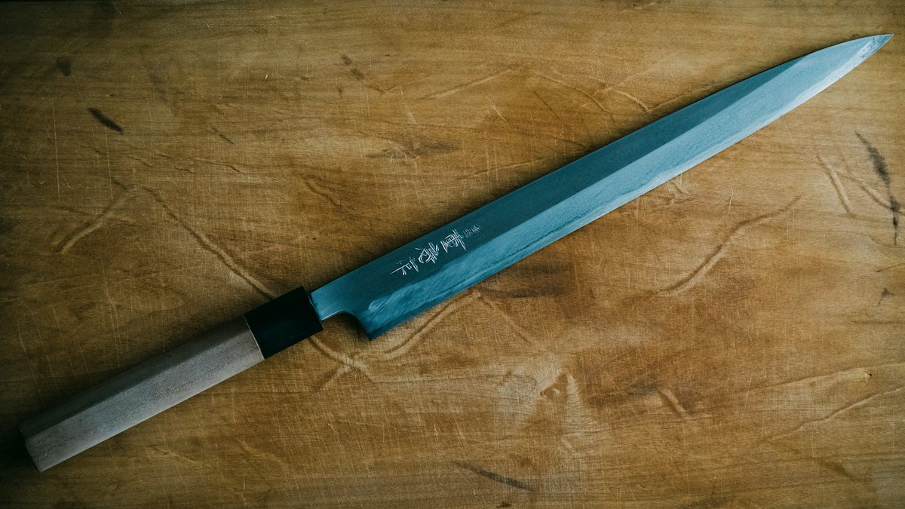
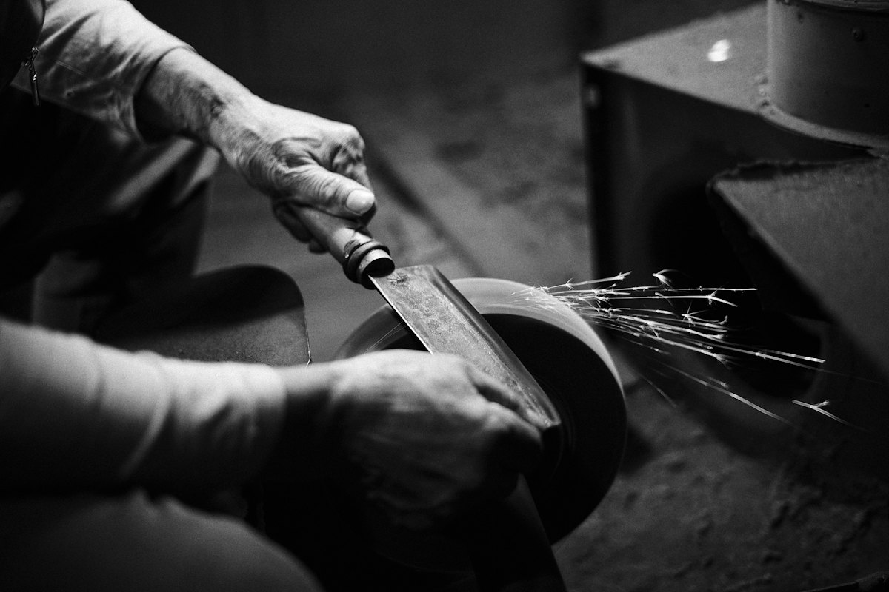
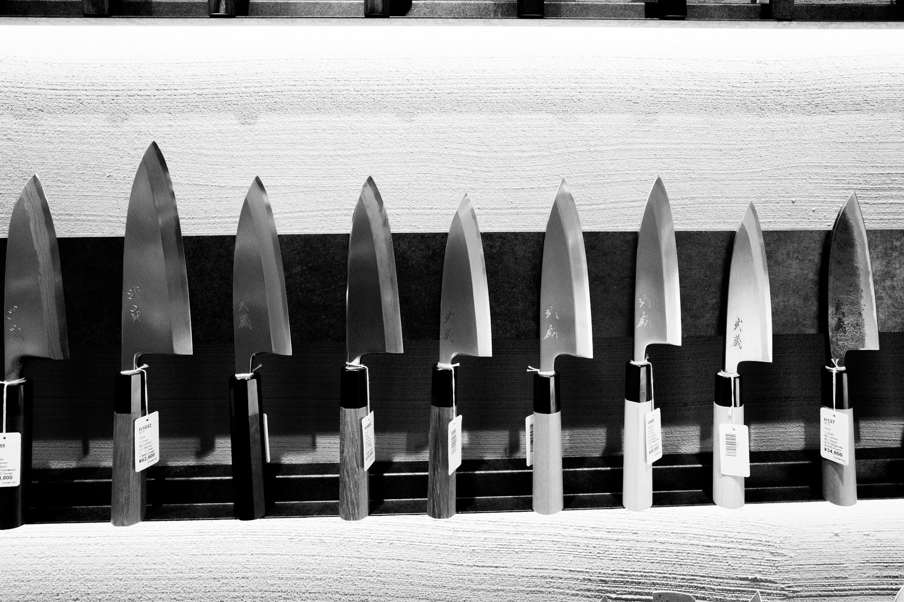

堺の包丁
鍛冶・刃付け・柄付けの職人の手を経て、一本に。
堺の包丁卸店 大阪府堺市
大阪・堺で、毎日コツコツと包丁を作っています。使う人のことを思い、一丁一丁丁寧に仕立て上げています。
鍛冶
鋼を熱し、叩いて、刃の形をつくる。
刃の上で、指やマウスを左右に動かしてみてください。
3Dのイメージです。実際の包丁とは異なります
堺刃物は「鍛冶」「刃付け」「柄付け」と分担されています。それぞれの職人が高度な技術を用いて1本の包丁を造る伝統は、現在も引き継がれています。
堺刃物は日本全国で約90%の料理人が使用している包丁と言われています。600年前から受け継がれてきた、堺刃物の技巧への信頼の証しです。

鍛冶・刃付け・柄付けの職人の手を経て、一本に。

研ぎの職人が、刃を仕上げます。
家庭で毎日使う一本も、丁寧に。

…
| 営業時間 | 平日 9:00〜18:00 |
|---|---|
| 定休日 | 土曜・日曜・祝日 |
包丁のご相談やお取引については、お電話かメールでどうぞ。